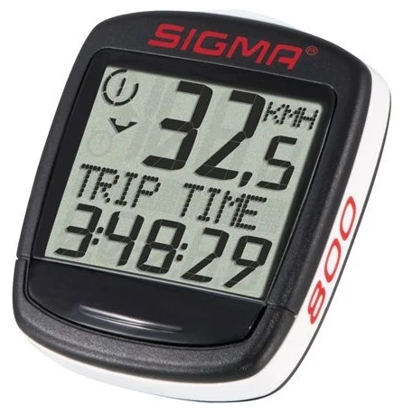
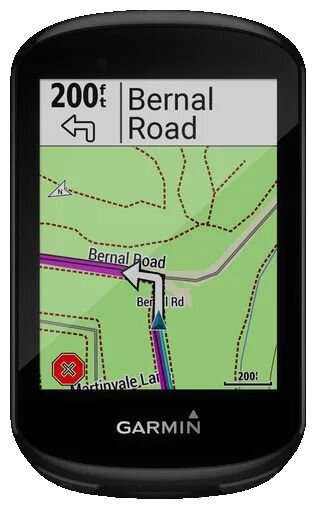
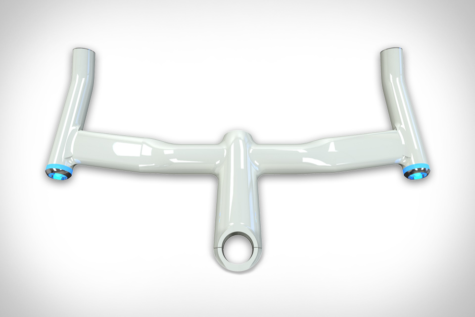

Велокомпьютер SIGMA BC 800
Характеристики...Тип: проводной велокомпьютер; Крепление: на руль; Часы: есть; Количество функций: 8; Функции: одометр, текущая скорость, средняя скорость, максимальная скорость, общее время движения, расстояние одной поездки; Тип батарей: CR2032;
Навигатор Garmin Edge 830

Характеристики...Тип: портативный Область применения: велосипедный Поддержка ГЛОНАСС: есть Программное обеспечение: Garmin Количество путевых точек: 200 Возможность загрузки карты местности: есть Функция расчета маршрута: есть Путевой компьютер: есть Функция Track-Back: есть Тип экрана: LCD-цветной Диагональ экрана: 2.3 дюйм. Разрешение экрана: 200x265 пикс. Сенсорный экран: есть Тип антенны: внутренняя Датчик освещенности: есть Время работы: 20 ч Подключение: USB, Bluetooth, Wi-Fi Водонепроницаемый корпус: есть Вес: 68 г
Умный» руль Helios Bars

Характеристики...Яркость: 500 люмен; Батарея: Литий-ионная; Срок службы батареи (250 лм): 20 часов; Срок службы батареи (500 лм): 9 часов; Материал: Усиленный алюминий; Вес: 610 - 810; Ширина: 420 мм ; Защита от непогоды; Постоянное отслеживание местоположения велосипеда по GPS; Беспроводная связь: Bluetooth и датчик GPS; Подключение к смартфону: Bluetooth 4.0;